Residencies are fun! Every residency is tailored to fit a school’s needs, interest, budget, and desired length of stay.
Every residency starts off with 45 minutes of stories. Classes can be combined for this activity.
Children make puppets in every residency!
One or more of the following sessions can be added:
 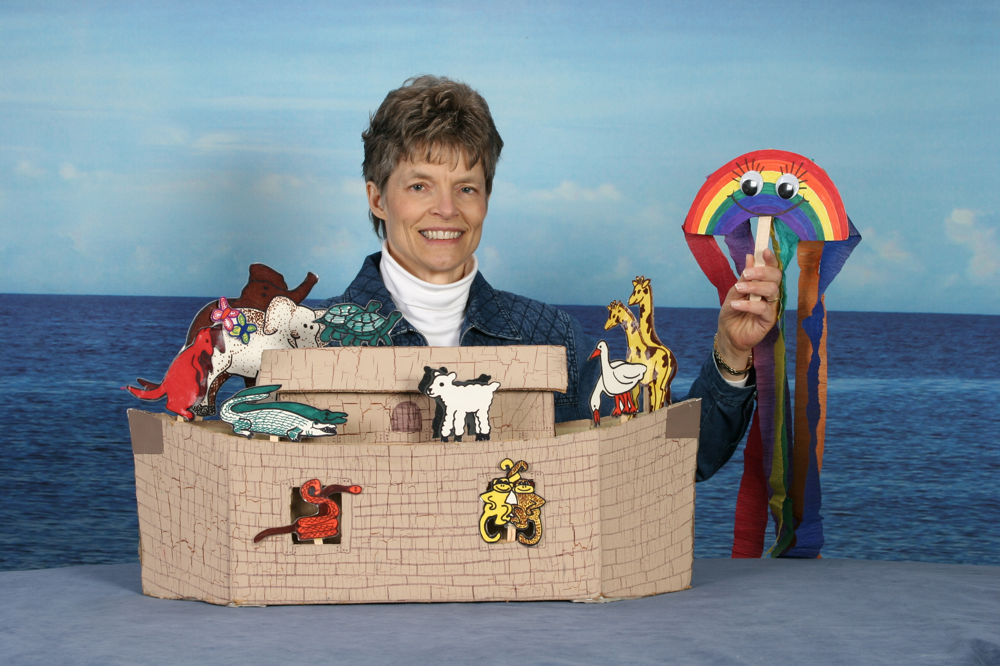
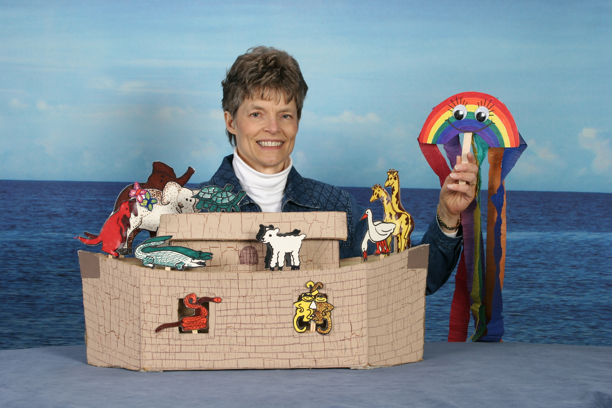
 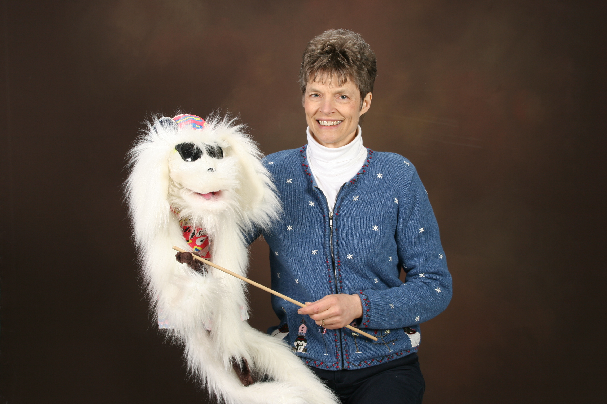
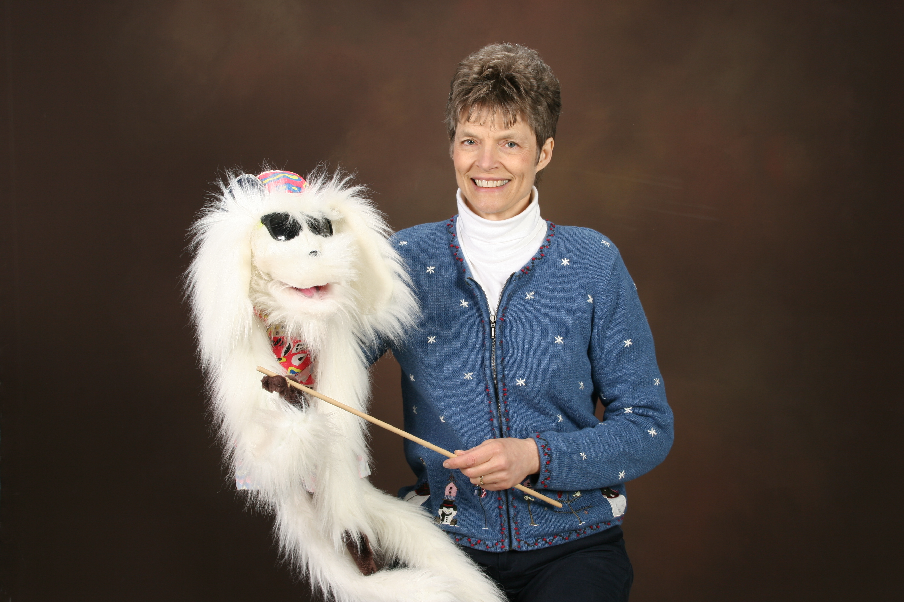


 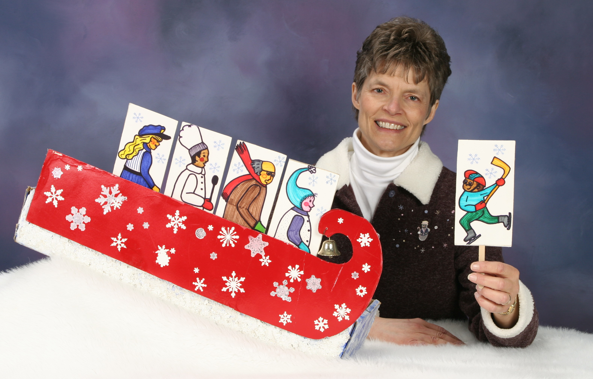
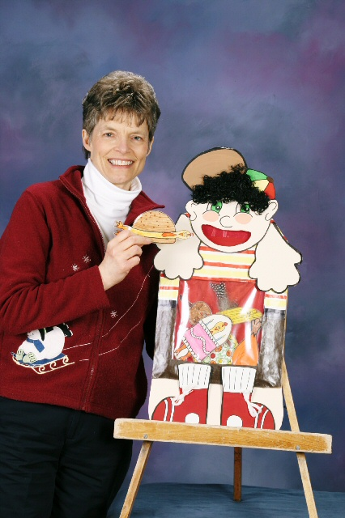
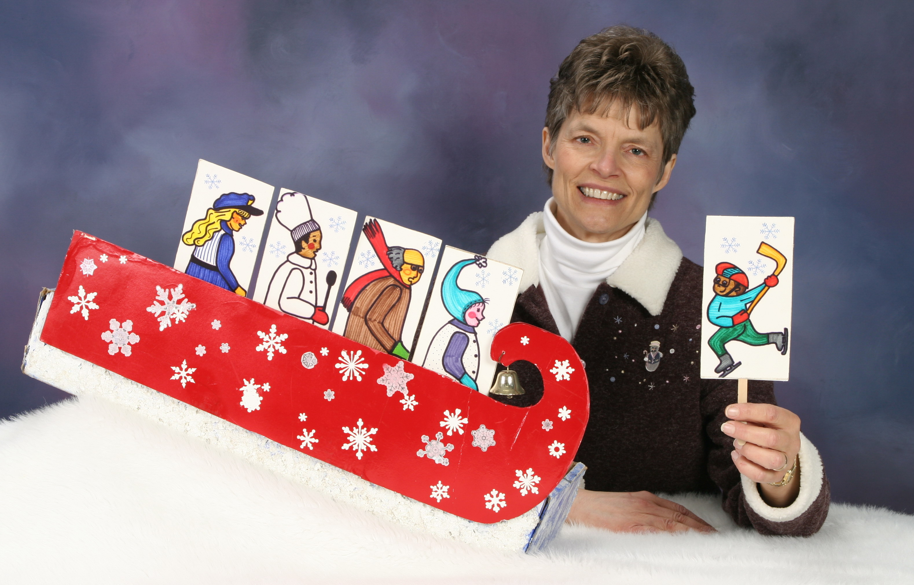
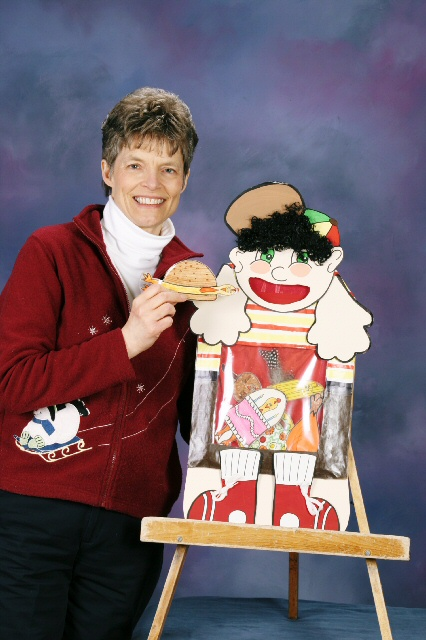


 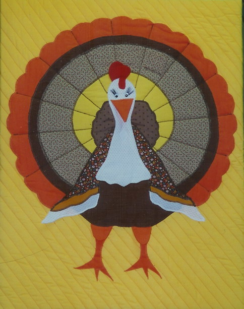
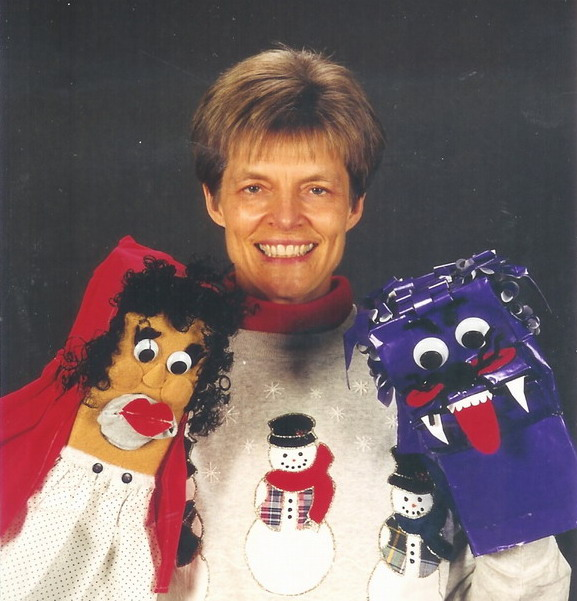
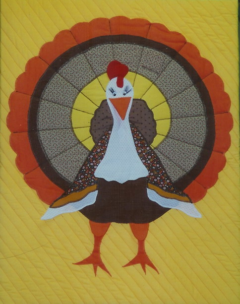
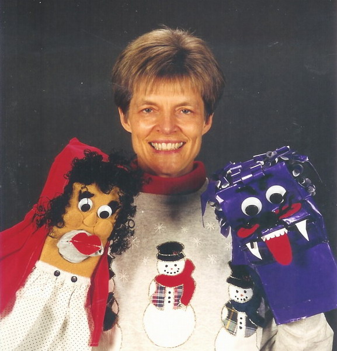

Just like a real puppeteer, children will warm up their voices with sung and spoken phrases. The head, nose, and chest voice are taught and the children get to try them out through the story of ‘The Three Bears’.
This is a series of games that get the children to quickly come up with short impromptu puppet plays. The games are introduced in a large group, and then children form small groups to practice the new skill.
Children will discover that, just like people, puppets like different things and that ‘different is good’. They will act out conflicts with their puppets, and come up with resolutions. Children also learn that you can’t tell on the outside what people are like. You have to look on the inside.
This can be done in just one hour if the children have learned to play theater games, and are acting out a familiar nursery rhyme (the youngest children) or story (older children). Children practice their plays for 30 minutes and then the plays are put on.
Time permitting, children create their own stories, rehearse them, and then perform them.
If considering a residency, Merlajean is happy to come to your school to show some of her unique puppets and to talk in more detail about residency options. There is no cost for this visit.